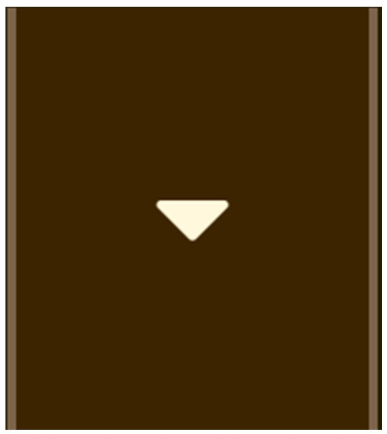

Cezeri, su saati, mumlu saat, ibrik, eğlence amaçlı kullanılan çeşitli robotlar, abdest almak için kullanılan robotlar, kan alma teknesi, fıskiye, kendinden ses çıkaran araç, suyu yukarı çıkartan araç, kilit, açıölçer, kayık su saati gibi birçok icat yapmıştır.
 Cezeri, elektrik gibi bir güç kaynağı kullanmadan sadece su ve mekanik parçalarla çalışan araçlar yapmıştır. Bu araçlar hava-boşluk-denge prensiplerine göre çalışmaktadır.
Cezeri, elektrik gibi bir güç kaynağı kullanmadan sadece su ve mekanik parçalarla çalışan araçlar yapmıştır. Bu araçlar hava-boşluk-denge prensiplerine göre çalışmaktadır.
Cezeri’nin mekanik araçlarla ilgili kaleme aldığı kitabı kısaca Kitab-ül Hiyel olarak bilinip, kitabın tam adı El Cami-u’l Beyn’el İlmi El-Ameli’en Nafi fş Sına’ati’l Hiyel’dir.
Türkçe karşılığı da “Makine Yapımındaki Faydalı Bilgiler ve Uygulamalar” şeklindedir.
Kitapta 50’den fazla mekanik araçtan bahsedilmektedir. Bu mekanik araçlardan bazıları şunlardır;
Su saatleri, güneş saatleri, fıskiyeler, otomatik abdest suyu sağlayan araçlar, ikramda bulunan araçlar, kendiliğinden çekilen kayık kürekleri, şifreli kapı kilitleri, su yükseltme ve su tahliye araçlarıdır.
Cezeri bu olağanüstü kitapta, cihazların kullanım esaslarını, yararlanma olanaklarını, yapım aşamalarını çizimlerle göstererek anlatmıştır.
Bu kitabın orijinali günümüze kadar ulaşamadıysa da, bilinen 15 kopyasından 10’u Avrupa'nın farklı müzelerinde, 5 tanesi Topkapı ve Süleymaniye kütüphanelerinde yer almaktadır.
El Cezeri, eserinin giriş bölümünde bu kitabı kaleme alış nedenini şöyle anlatır:
“Bir gün Sultan’ın huzurundaydım ve yapmamı emrettiği şeyi getirmiştim. Ne düşündüğümü sezdi ve gizlediğimi açığa vurdu ve bana şöyle dedi: “Eşsiz araçlar yapmış, onları gücünle işler duruma getirmişsin. Seni yoran ve kusursuz biçimde inşa ettiğin bu şeyler kaybolup gitmesin. Benim için icat ettiğin bu araçları bir araya toplayan ve her birinden ve resimlerinden seçmeleri kapsayan bir kitap yazmanı istiyorum.” Onun bana sunduğu modeli uyguladım ve önerilerini kabul ettim, zaten boyun eğmekten başka yapacağım bir şey yoktu. Gerekli çalışmayı yapmak üzere gücümü topladım ve bu kitabı kaleme aldım.”
El Cezerinin Kitabı 6 Bölümden Oluşur:
1. bölüm, saatlerin yapımıyla ilgilidir.
2. bölümdeki makineler, daha çok saray eğlenceleri için tasarlanmıştır. Bu bölüm kap kacakların yapılışını ve otomatik içecek sunan robotları, otomatları içerir.
3. bölüm, ibriklerin, kan alma teknelerinin ve abdest alma makinelerinin yapımı üzerinedir.
4. bölümde, havuzlar ve fıskiyeler anlatılır.
5. bölüm, suyun yükseklere ve uzaklara taşınmasını sağlayan pompalar ve araçlarla ilgilidir.
6. bölüm, devasa kapı kilitleri, şifreli kilitler, kasalar, açıölçer tasarımı ve oymacılık gibi çeşitli bilgileri içerir.
EL CEZERİ’NİN ESERLERİ HAKKINDA DETAYLI BİLGİYE ULAŞMAK İÇİN MENÜDEKİ
BUTONUNA TIKLAYINIZ !